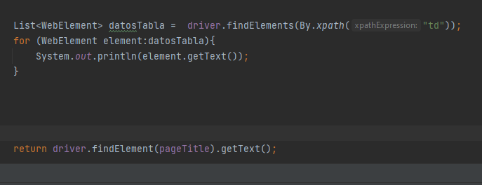
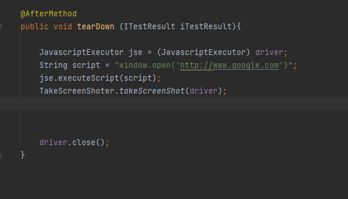

Arquitectura:
Las clases de un proyecto de pruebas automatizadas se colocan dentro de la carpeta test, así mismo los recursos que se requieran dentro de la carpeta resources (archivos, properties, test suite...).
Selenium y TestNG:
Selenium es la librería que nos permite interactuar con un navegador y TestNG es otra librería que permite
incluir validaciones dentro de esa iteracción. Para incluirla dentro del proyecto se puede utilizar Maven
con su "pom" que es un gestor de depencias.
Recordar que cuando se ejecuta desde Intellij o Maven se agregan automaticamente los classpath
pero cuando se ajecuta de otra forma se debe agragar el classpath de la depencias usadas
Crear una prueba:
Para crear una prueba basta con crear un método de la clase y colocar la etiqueta @Test de TestNG. esta se ejecutará automaticamente con Maven o con el boton de play en el IDE.
Driver:
El Driver es el elemento que nos permite realizar acciones sobre el navegador, se debe descargar el Driver para cada navegador, almacenarlo en una ruta del proyecto y ajustar esos datos dentro de las propiedades del sistema. Esto se puede hacer en un metodo con la etiqueta @BeforeTest que se ejecutará antes de cualquier prueba para esa clase.
Implicit Wait:
Ajusta el tiempo de espera de un elemento a que se cargado en el navegador en una la página, con el objeto de tipo Duration de java.time se ajust el tiempo de espera.
Clase Assert:
Clase statica que pertenece el paquete TestNG que se utiliza para realizar las validaciones si el assert falla la prueba se detiene. Existen muchos métodos en esta clase para realizar las validaciones
Find Elements:
Método de la clase driver que devuelve una lista con todas los elementos coincidentes para luego tratar a cada uno de ellos.
Take Screen Shot:
Para tomar una captura de pantalla se debe realizar un cast del driver para obtener un objeto de tipo TakesScreenShot y con este utilizar el método getScreenShotAs como un archivo. Luego de tener el archivo se tiene que copiar a la ubicación deseada.
Clase ItResult:
Esta clase puede ser recibida en los métodos para validar el estado en el que termina una prueba y dependiendo del mismo realizar alguna acción, ej: tomar una captura si la pruebaa falla.
Java Script Executor:
Este objeto sirve para ejecutar código JS desde selenium en el navegador que este activo. Se realiza un cast del driver y se pasa el código JS como String .

Abrir nueva pestaña:
Se hace mediante código JS.
Activar pestaña:
Para activar una pestaña y trabajar sobre ella se debe usar el driver con el método switchTo y luego usar el método window pasando como argumento el hadler de la ventana que el el string que la identifica. Recordar cerrar todas las pestañas al terminar la prueba o usar driver quit que cierra todo.